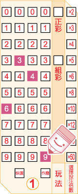
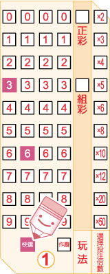
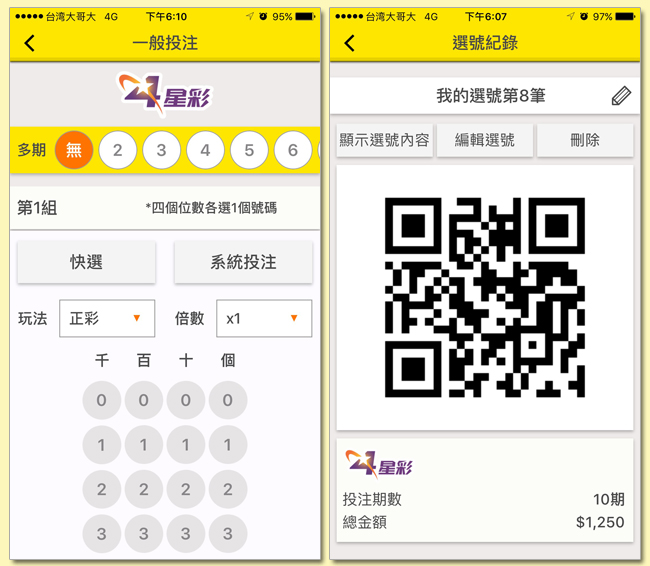

您可以利用以下三種方式投注 4 星彩：
一、使用選號單進行投注：
每張 4 星彩選號單上都有 4 個選號區，最多可以投注 4 組選號。每個選號區都設 有 4 個欄位，分別代表一個位數(0~9)，您可以依照自己的喜好，自由選用以下 幾種不同的方式填寫選號單，進行投注。
* 注意，在同一張選號單上，各選號區可分別採用不同的投注方式。
選號單之正確劃記方式有三種，塗滿
、打叉或打勾，但請勿超過格線。填寫步驟如下：
1.劃記選號
|
A.自行選號
利用選號區的四個欄位(0~9)，從左至右各填選一個數字，四位數號碼(選號範圍為 0000 ~9999)。 以下圖為例，如果您要投注 6349 這組號碼，請在最左邊一欄填選 6，左邊第二欄填選 3，第三欄填選 4，最右邊一欄填選 9。

|
B.快選
在選號區中，劃記「快選」，投注機將隨機產生一組四位數號碼。 
|
|
C.部分快選
您可以只填選選號區中的1~3 個欄位，並劃記「快選」，投注機將隨機為您選出其餘欄位的號碼，形成一組四位數號碼。以下圖為例，如果您只選擇第一和第二欄位(分別為 3 和 6)，並劃記「快選」，剩下的第三和第四欄位的號碼將由投注機隨機快選產生。

|
D.系統投注
您可以在選號區中任一欄位裡填選兩個(含)以上的數字進行投注，系統將就您的選號排列出所有可能的號碼組合。 以下圖為例，如果您在第一欄填選的號碼為5和7，第二欄填選的號碼為 2 和 3 ， 第三欄填選的號碼為 8，第四欄填選的號碼為 1 和 4 ，則您投注的所有號碼組合將為 5381、7381、5281、7281、5384、7384、5284、7284。 
|
A.正彩
如果您預測您的選號將與開出獎號的數字、順序完全相同，即可選擇此玩法。
B.組彩如果您預測您的選號將與開出獎號的四位數字相同，但順序可能不同，即可選擇此玩法。但如果您的選號為四個完全相同的數字(如：1111 或 2222)，則不得選擇此玩法。
C. 您可選擇用同一組選號投注「正彩」和「組彩」，同時填選此兩種玩法即可，不須分開投注。
* 注意，當您同時填選「正彩」和「組彩」時，投注金額將以兩注計算。
下圖的範例即為同時投注「正彩」和「組彩」。
您可就某組選號加倍投注，投注倍數最高為50倍。如果您不想加倍投注，則不需要填寫該欄。
您可以利用選號單上的「多期投注」欄位，就該張選號單上的投注內容連續投注2~24期(含當期)，如果您不想投注多期，則不需要填寫該欄。
*
注意，您在多期投注期間不得中途要求退/換彩券，但如果對中任何一期的獎項，可直接至任一投注站或中國信託商業銀行(股)公司指定兌獎處兌獎，不需等到最後一期開獎結束。兌獎時，投注站或中國信託商業銀行(股)公司指定兌獎處將列印出一張「交換票」給您，供您在剩餘的有效期數內對獎。
二、口頭投注
三、智慧型手機電子選號單( QR-Code)投注

* 購券者的選號若遇到當時該組選號之銷售注數上限時，即無法購得。